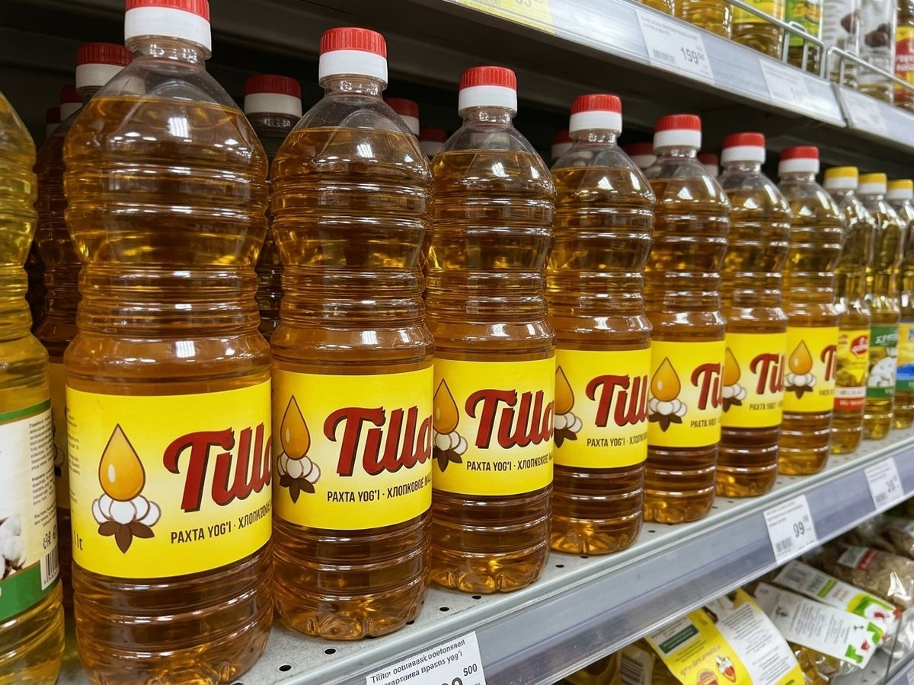
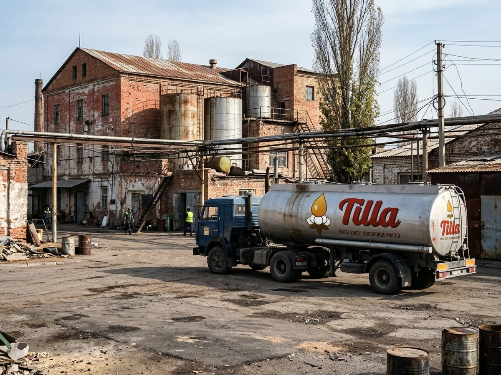

Tilla ✓
Тилла
Bazar-Korgon Yog' Zavodi
✓ Verified by AttelkomBrand page
+ FollowFind the nearest
Home
The oil for plov.
Products
See all 3Tilla cottonseed oil, 1 l
12 som
Tilla cottonseed oil, 5 l
55 som
Tilla Kungaboqar sunflower oil, 1 l
13 som
Products
Tilla cottonseed oil, 1 l
12 som
Tilla cottonseed oil, 5 l
55 som
Tilla Kungaboqar sunflower oil, 1 l
13 som
About
Tilla from the Bazar-Korgon oil mill: refined cottonseed oil, the oil for plov, and Tilla Kungaboqar sunflower oil.
1 locations on Kartalar: Bazar-Korgon 1.
Photos

The oil for plov
The oil millReviews (0)
No reviews yet.